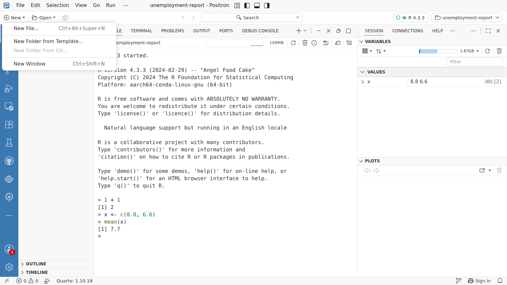
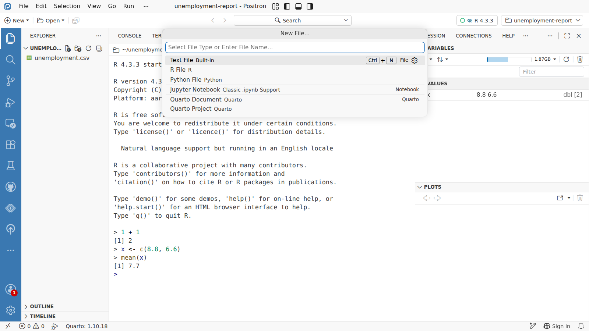
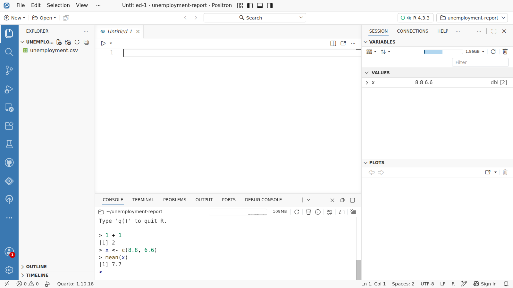
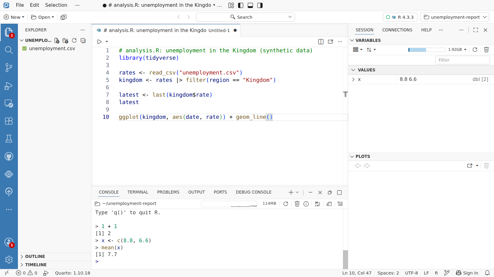

اليوم 1 · كتابة الكود
من الكونسول إلى السكربت






New File...
R File
Untitled-1
analysis.R
the tidyverse
Console
Variables
Plots
Data Explorer
1
اللي تكتبه في Console يروح أول ما تقفل الجلسة، والسكربت يحفظه لك في ملف. نبدأ واحدًا: نضغط New فوق على اليسار، ثم New File...
2
يسألك Positron عن نوع الملف، ونختار R File. ومن القائمة نفسها تنشئ ملفات Python ومستندات Quarto.
3
ينفتح سكربت R فاضي في المحرّر، فوق لوحة Console. وما له اسم إلى الآن، فيسمّيه Positron مؤقتًا Untitled-1.
4
نكتب الكود فيه. والنقطة اللي على التبويب معناها: فيه تعديلات ما انحفظت إلى الآن.
5
نضغط Ctrl+S، ونكتب الاسم
analysis.R، ونضغط Enter. الحين صار الملف في Explorer جنب البيانات، تشغّله من جديد متى ما احتجت.6
أول سطر
library(tidyverse) يحمّل tidyverse: عائلة حزم تقرأ البيانات وترتّبها وترسمها، منها readr وdplyr وggplot2.7
الدالة
read_csv() تقرأ الملف، و|> تمرّر البيانات إلى filter() اللي تُبقي صفوف المملكة بس. وكل سطر يحفظ نتيجته بـ <-.8
نحدّد الأسطر ونضغط Ctrl+Enter، فتنتقل إلى Console وتشتغل من فوق لتحت، كأنك كتبتها بيدك.
9
شوف لوحة Variables: فيها
rates بـ 224 صفًا، وkingdom بصفوف المملكة الـ 16، وlatest آخر معدل لها: 6.6.10
وآخر سطر يرسم الرسم البياني، ويطلع على طول في لوحة Plots.
11
والأمر
View(rates) يفتح البيانات جدولًا في Data Explorer: كل عمود، ونوعه، وكيف تتوزّع قيمه.